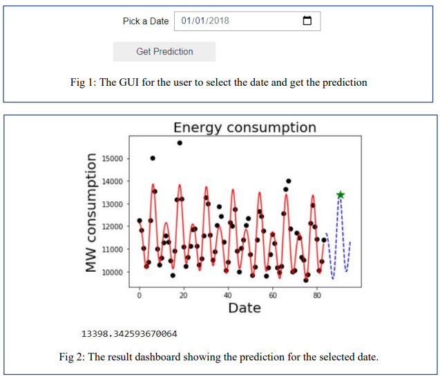

Daily Energy Consumption
This project is aimed at building a machine learning model that can predict the daily electric energy consumption. The data is taken from the Kaggle. The energy consumption data was available from January - 2011 to August - 2017. The data is cleaned and sorted using Pandas. Matplotlib is used for data visualization. Polynomial+periodic regression is used to build the machine learning model. The hyperparameter d-poly (degree of the polynomial), d-period (number of periodic terms) and the time period (T) are tuned such that it gives the minimum squared error and the best future forecast. The project is implemented using Jupyter notebook. GUI is created using ipywidgets where the user can enter a date and get the prediction for the selected date. The Jupyter notebook is dockerize with the remote Linux server using AWS EC2. Dockerized Jupyter notebook is deployed to the web using Heroku here.